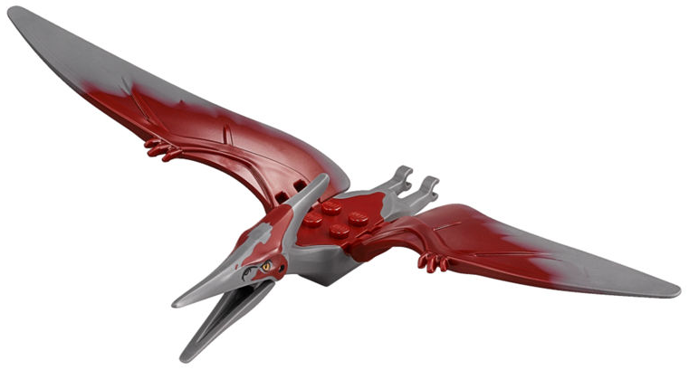

Le Ptéranodon est un diapside volant qui a vécu durant l’ère du Crétacé, il y a environ 70 à 85 millions d’années, de l’ordre des Ptérosaures. Il est facilement reconnaissable à la longue et fine crête qui orne son crâne. Ses os étaient creux et à mince paroi et leurs squelettes fossiles étaient souvent retrouvés écrasés. 